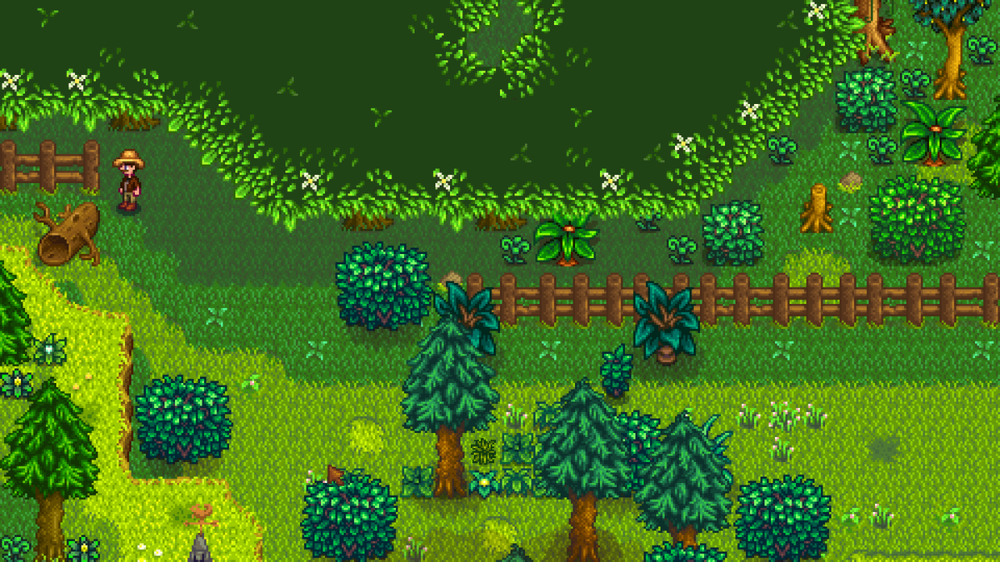

Stardew Valley é um RPG sem fim da vida no campo! Você herdou a antiga fazenda de seu avô no Vale do
Orvalho. Equipado com ferramentas de segunda mão e algumas moedas, você irá começar sua nova vida.
Cultivo e Criação de Animais
Os jogadores podem cultivar uma variedade de plantas, incluindo
frutas, legumes e
flores, e criar animais como vacas, galinhas e ovelhas para obter produtos como leite, ovos
e lã.
Pesca
A habilidade de pesca é associada com a captura de peixes. Completando com sucesso o minigame de pesca aumenta a habilidade de pesca. Cada nível adiciona +1 de proficiência à vara de pesca.
Mineração
Habilidade de mineração é aumentada usando a picareta para quebrar rochas. Cada nível acrescenta +1 à proficiência da picareta.
Combate
Habilidade de combate está ligada à capacidade do jogador de lutar contra monstros. Cada nível acrescenta +5 em pontos de vida.
Coleta

Habilidade de coleta aumenta ao reunir itens coletáveis do chão em toda Stardew Valley, e ao cortar árvores com um machado. Cada nível adiciona +1 de proficiência ao machado.